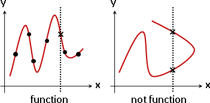
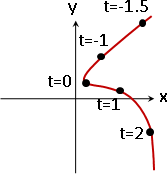
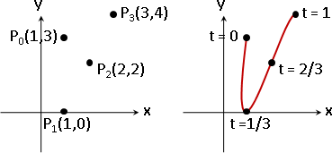
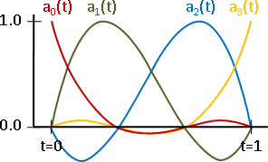

Curve
程度★★ 難度★★
Curve
本單元的先備知識是「Polynomial Interpolation」！
想要製作曲線，最簡單的方式就是點上幾個點，然後運用多項式內插，得到一條穿過這些點的曲線。
這種方式有個嚴重的問題：曲線是一個函數，每個X值只對應一個Y值；曲線不能到處亂繞，只能左右伸展。
要解決這個問題，最簡單的方法，就是分別處理X軸與Y軸。用一個多項式專門處理X座標，用另一個多項式專門處理Y座標。

x(t) = a0 + a1 t1 + ... + aN-1 tN-1
y(t) = b0 + b1 t1 + ... + bN-1 tN-1
例如
x(t) = 1 + 2t1 + 3t2 - t3
y(t) = 2 - t1 + t2 - t3
⋮
t代入-0.1，得到一個座標(x(-0.1), y(-0.1)) = (0.831, 2.111)
t代入 0，得到一個座標(x(0) , y(0) ) = (1, 2)
t代入 0.1，得到一個座標(x(0.1) , y(0.1) ) = (1.229, 1.909)
⋮
由於X軸與Y軸互相垂直，兩者完全不會互相干擾。學過線性代數的讀者，應該能夠體會這種軸與軸互相獨立的精神。
其實這個手法就叫做「參數式Parametric Equation」，高中數學、微積分、線性代數課程都有提到，既基礎又常見，不是什麼艱深晦澀的玩意。
回到正題。電腦擅於處理大量資料。我們可以製作非常多條曲線，讓曲線銜接曲線，就得到各式各樣的形狀了。因此，通常我們不會製作無限長的曲線，其實製作一小段曲線就夠了。
我們習慣讓t值的範圍是0.0到1.0，設定三個點、用二次多項式實施內插；或者設定四個點，用三次多項式實施內插。一次多項式只能產生直線，二次以上的多項式就足以產生曲線。
平面上有四個點(1,3) (1,0) (2,2) (3,4) 使用三次多項式（四項）做為內插多項式，製作依序穿過這四點的曲線。 x(t) = a0 t0 + a1 t1 + a2 t2 + a3 t3 y(t) = b0 t0 + b1 t1 + b2 t2 + b3 t3
首先處理X座標！
令這四點對應的t值分別是 t = 0 , t = 1/3 , t = 2/3 , t = 1
也就是說 x(0) = 1 , x(1/3) = 1 , x(2/3) = 2 , x(1) = 3
[ 00 01 02 03 ] [ a0 ] [ 1 ]
[ (1/3)0 (1/3)1 (1/3)2 (1/3)3 ] [ a1 ] = [ 1 ]
[ (2/3)0 (2/3)1 (2/3)2 (2/3)3 ] [ a2 ] [ 2 ]
[ 10 11 12 13 ] [ a3 ] [ 3 ]
-1
[ a0 ] [ 00 01 02 03 ] [ 1 ]
[ a1 ] = [ (1/3)0 (1/3)1 (1/3)2 (1/3)3 ] [ 1 ]
[ a2 ] [ (2/3)0 (2/3)1 (2/3)2 (2/3)3 ] [ 2 ]
[ a3 ] [ 10 11 12 13 ] [ 3 ]
[ a0 ] [ 1 0 0 0 ] [ 1 ]
[ a1 ] = [ -5.5 9 -4.5 1 ] [ 1 ]
[ a2 ] [ 9 -22.5 18 -4.5 ] [ 2 ]
[ a3 ] [ -4.5 13.5 -13.5 4.5 ] [ 3 ]
矩陣乘以向量，就得到多項式係數。這裡就省略不算了。
多項式代入各種t值（範圍是0≤t≤1），就得到曲線上每個點的X座標。這裡就省略不算了。
另一方面，其實矩陣是固定不變的。
不管給定的點是哪四個點，往後都可以直接套用公式，求得多項式係數：
[ a0 ] [ 1 0 0 0 ] [ x0 ]
[ a1 ] = [ -5.5 9 -4.5 1 ] [ x1 ]
[ a2 ] [ 9 -22.5 18 -4.5 ] [ x2 ]
[ a3 ] [ -4.5 13.5 -13.5 4.5 ] [ x3 ]
Y座標也是如法炮製！ 令這四點對應的t值分別是 t = 0 , t = 1/3 , t = 2/3 , t = 1 也就是說 y(0) = 3 , y(1/3) = 0 , y(2/3) = 2 , y(1) = 4 [ b0 ] [ 1 0 0 0 ] [ y0 ] [ b1 ] = [ -5.5 9 -4.5 1 ] [ y1 ] [ b2 ] [ 9 -22.5 18 -4.5 ] [ y2 ] [ b3 ] [ -4.5 13.5 -13.5 4.5 ] [ y3 ]
延伸閱讀：Blending Functions
把內插多項式改寫為線性變換的模樣，代入方才求得的公式解，然後重新整理式子：
x(t) = a0 t0 + a1 t1 + a2 t2 + a3 t3
[ a0 ]
= [ t0 t1 t2 t3 ] [ a1 ] 寫成內積
[ a2 ]
[ a3 ]
[ 1 0 0 0] [ x0 ]
= [ t0 t1 t2 t3 ] [-5.5 9 -4.5 1] [ x1 ] 代入公式
[ 9 -22.5 18 -4.5] [ x2 ]
[-4.5 13.5 -13.5 4.5] [ x3 ]
[ x0 ]
= [ a0(t) a1(t) a2(t) a3(t) ] [ x1 ] 前面兩個矩陣先相乘
[ x2 ]
[ x3 ]
其中
a0(t) = -4.5 (t-1/3) (t-2/3) (t-1)
a1(t) = 13.5t (t-2/3) (t-1)
a2(t) = -13.5t (t-1/3) (t-1)
a3(t) = 4.5t (t-1/3) (t-2/3)

運用線性代數的知識，把原本的內插多項式，轉化成四個多項式、以不同比重相加；比重是一開始那四個點的座標值。
仔細觀察這四個多項式，在0≤t≤1範圍內，有一些部分小於零。這造成四個多項式疊加之後，曲線忽陡忽緩、有進有退，曲線扭動得太厲害，曲線不太平順。
（以數學術語來說，四個多項式在0≤t≤1範圍內有根、有負值，疊加之後既不是凸函數也不是凹函數，不夠平順。）
接下來將一步一步製作更平順的曲線。
Hermite Curve
程度★★ 難度★
Hermite Curve
改用兩個點以及這兩個點的斜率來建立曲線。特色是：曲線與曲線之間得以共用端點、共用斜率，讓銜接之處看起來比較平順，讓銜接之處是一次可微的。
平面上有兩個點 (1,1) (3,2) 以及這兩個點的斜率 (0,9) (-3,-6) 使用三次多項式（四項）做為內插多項式，製作依序穿過這兩點的曲線。 x(t) = a0 t0 + a1 t1 + a2 t2 + a3 t3 y(t) = b0 t0 + b1 t1 + b2 t2 + b3 t3 x'(t) = a1 t0 + 2 a2 t1 + 3 a3 t2 y'(t) = b1 t0 + 2 b2 t1 + 3 b3 t2
首先處理X座標！
令這兩點對應的t值分別是 t = 0 , t = 1
也就是說 x(0) = 1 , x(1) = 3 , x'(0) = 0 , x'(1) = -1
x (0) = 1 = a0 00 + a1 01 + a2 02 + a3 03
x (1) = 3 = a0 10 + a1 11 + a2 12 + a3 13
x'(0) = 0 = a1 00 + 2 a2 01 + 3 a3 02
x'(1) = -3 = a1 10 + 2 a2 11 + 3 a3 12
x (0) = 1 = a0
x (1) = 3 = a0 + a1 + a2 + a3
x'(0) = 0 = a1
x'(1) = -3 = a1 + 2 a2 + 3 a3
[ 1 0 0 0 ] [ a0 ] [ 1 ]
[ 1 1 1 1 ] [ a1 ] = [ 3 ]
[ 0 1 0 0 ] [ a2 ] [ 0 ]
[ 0 1 2 3 ] [ a3 ] [ -3 ]
-1
[ a0 ] [ 1 0 0 0 ] [ 1 ]
[ a1 ] = [ 1 1 1 1 ] [ 3 ]
[ a2 ] [ 0 1 0 0 ] [ 0 ]
[ a3 ] [ 0 1 2 3 ] [ -3 ]
[ a0 ] [ 1 0 0 0 ] [ 1 ]
[ a1 ] = [ 0 0 1 0 ] [ 3 ]
[ a2 ] [ -3 3 -2 -1 ] [ 0 ]
[ a3 ] [ 2 -2 1 1 ] [ -3 ]
矩陣乘以向量，就得到多項式係數。這裡就省略不算了。
多項式代入各種t值（範圍是0≤t≤1），就得到曲線上每個點的X座標。這裡就省略不算了。
另一方面，其實矩陣是固定不變的。
不管給定的點是哪四個點，往後都可以直接套用公式，求得多項式係數：
[ a0 ] [ 1 0 0 0 ] [ x0 ]
[ a1 ] = [ 0 0 1 0 ] [ x1 ]
[ a2 ] [ -3 3 -2 -1 ] [ dx0 ]
[ a3 ] [ 2 -2 1 1 ] [ dx1 ]
a0 = x0
a1 = dx0
a2 = -3x0 + 3x1 - 2dx0 - dx1
a3 = 2x0 + -2x1 + dx0 + dx1
進一步求得多項式：
x(t) = (2t3 - 3t2 + 1) * x0
+ (t3 - 2t2 + t) * dx0
+ (-2t3 + 3t2) * x1
+ (t3 - t2) * dx1
Y座標也是如法炮製！
令這兩點對應的t值分別是 t = 0 , t = 1
也就是說 y(0) = 1 , y(1) = 2 , y'(0) = 9 , y'(1) = -6
[ b0 ] [ 1 0 0 0 ] [ y0 ]
[ b1 ] = [ 0 0 1 0 ] [ y1 ]
[ b2 ] [ -3 3 -2 -1 ] [ dy0 ]
[ b3 ] [ 2 -2 1 1 ] [ dy1 ]
y(t) = (2t3 - 3t2 + 1) * y0
+ (t3 - 2t2 + t) * dy0
+ (-2t3 + 3t2) * y1
+ (t3 - t2) * dy1
Bézier Curve
程度★★ 難度★
Bézier Curve
Hermite Curve的改良版本。直接使用四個點，推導出兩個點與兩個點的斜率。特色是：在使用者介面當中，控制點的位置，比起控制斜率大小來得直覺多了。
也可以使用三個點。但是曲線與曲線銜接的地方就不平順了。
平面上有四個點 (1,3) (1,0) (2,2) (3,4)
(1,3) (3,4) 是曲線穿過的點，對應的t值分別是 t = 0 , t = 1
(1,0) (2,2) 用來計算斜率，對應的t值分別是 t = 1/3 , t = 2/3
[(1,0) - (1,3)] ÷ 1/3 , [(3,4) - (2,2)] ÷ 1/3 是這兩個點的斜率。
[ a0 ] [ 1 0 0 0 ] [ x0 ]
[ a1 ] = [ -3 3 0 0 ] [ x1 ]
[ a2 ] [ 3 -6 3 0 ] [ x2 ]
[ a3 ] [ -1 3 -3 1 ] [ x3 ]
x(t) = (-t3 + 3t2 - 3t + 1) * x0
+ (3t3 - 6t2 + 3t) * x1
+ (-3t3 + 3t2) * x2
+ (t3) * x3
[ b0 ] [ 1 0 0 0 ] [ y0 ]
[ b1 ] = [ -3 3 0 0 ] [ y1 ]
[ b2 ] [ 3 -6 3 0 ] [ y2 ]
[ b3 ] [ -1 3 -3 1 ] [ y3 ]
y(t) = (-t3 + 3t2 - 3t + 1) * y0
+ (3t3 - 6t2 + 3t) * y1
+ (-3t3 + 3t2) * y2
+ (t3) * y3
B-spline Curve
程度★★ 難度★★
【待補文字】
NURBS Curve
程度★★ 難度★★